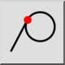

Tangentinis
Įrankių juosta / piktograma:


Meniu: Snap > Tangentinis
Trumpasis adresas: S, B
Komandos: snaptangential | sb
Įrankių juosta / piktograma:


Prisitraukia prie lietimosi taško ant lanko, apskritimo ar elipsės. Tai taikoma tik brėžiant linijas. Pritraukimo taškas yra įsivaizduojamos linijos nuo santykinio nulinio taško, liestinės spustelėtam lankui ar apskritimui, lietimosi taškas.